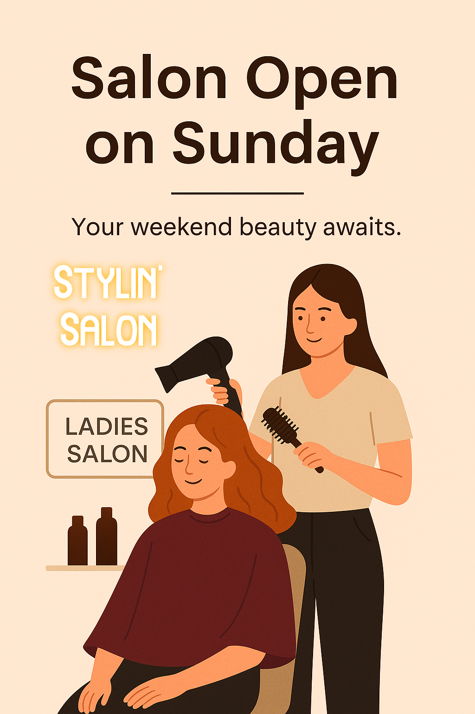

Stylin Ladies Salon in Kottayam Open on Sundays – Your Perfect Weekend Beauty Destination
Are you searching for a beauty parlour near me open on Sundays or a salon near me open on Sunday? Welcome to Stylin Ladies Salon, Kottayam's favorite beauty destination that understands your busy schedule. We are open on Sundays, so you never have to postpone your self-care rituals.
Why Stylin Ladies Salon is Your Go-To Sunday Salon in Kottayam
We believe that beauty shouldn't wait, even on weekends. Our salon is the perfect spot for women in Kottayam to relax and refresh. Whether you need a quick trim, a rejuvenating facial, or a bridal makeover, we’ve got you covered — even on Sundays!
Our Popular Sunday Services Include:
- Haircut and Hair Spa
- Facial Treatments and Skin Polishing
- Full Body Waxing and Threading
- Hot Oil Massage and Hair Wash
- Saree Draping and Occasion Makeup
- Kids’ Haircut and 'Mummy & Me' packages
Benefits of Choosing Stylin Ladies Salon:
- Convenient Sunday hours
- Professional and friendly staff
- Hygienic, air-conditioned environment
- Affordable rates with exclusive weekend offers
- Easy appointment booking through WhatsApp
Book Now – Because You Deserve It!
Don't let your busy weekdays steal your glow. Take advantage of your Sunday and pamper yourself at Stylin Ladies Salon, the most reliable ladies beauty parlour in Kottayam open on Sunday.
📞 Call or WhatsApp us today 7736417677 to book your Sunday beauty session!
Come and experience expert care on weekends — only at Stylin Ladies Salon, Kottayam.